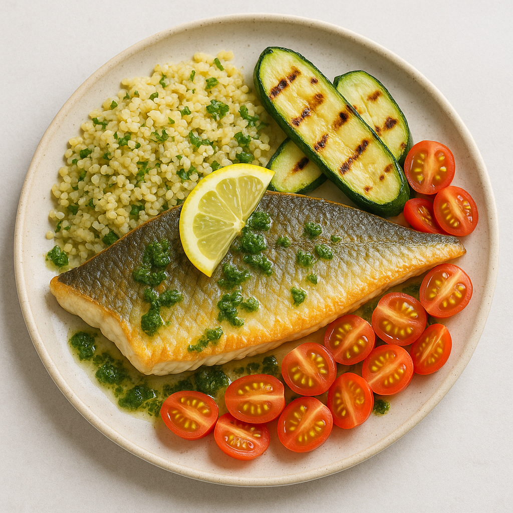

Lemon & Herb Sea Bass
Home

Description
A vibrant, Mediterranean-inspired dish that celebrates clean, fresh flavors and wholesome ingredients. Succulent sea bass is pan-seared to golden perfection, its crisp skin complementing the delicate, flaky flesh beneath. It's served alongside fluffy bulgur wheat, lightly seasoned and speckled with fresh herbs. Charred courgette slices add a smoky depth, while a generous drizzle of zesty green herb dressing ties the dish together with a burst of freshness. Finished with a slice of lemon for brightness, this plate is as nourishing as it is beautiful.
Ingredients
- Olive Oil
- Shallot
- Courgette
- Baby Plum Tomatoes
- Flat Leaf Parsley
- Sea Bass Fillets
- Vegetable Stock Paste
- Bulgur Wheat
Steps
- Halve, peel and chop the red onion into small pieces. Zest and halve the lemon. Trim the courgette, then slice into rounds about 1cm thick. Quarter the tomatoes. Roughly chop the parsley (stalks and all). Pop the lemon zest into a large bowl with the olive oil for the marinade (see ingredients for amount) and season with salt and pepper. Mix together, then add the sea bass. Turn to coat the fish in the marinade, then set aside. IMPORTANT: Wash your hands and equipment after handling raw fish.
- Heat a drizzle of oil in a medium saucepan on medium heat. Once hot, add the onion and cook, stirring occasionally, until soft, 3-4 mins. Pour the water for the bulgur wheat (see ingredients for amount) into the onion pan, stir in the veg stock paste and bring to the boil. Stir in the bulgur, bring back up to the boil and simmer for 1 min. Pop a lid on the pan and remove from the heat. Leave to the side for 12-15 mins or until ready to serve.
- Once the bulgur has been set aside, pop a large frying pan on medium-high heat (no oil). When hot, add the courgette rounds and cook until charred, 3-4 mins each side. Turn only every couple of mins - this will result in the courgette picking up some nice colour. Once cooked, season with salt and pepper, then transfer half the charred courgettes to a bowl and cover to keep warm. Chop the remaining courgette into small pieces and set aside.
- While the courgette chars, pop the olive oil for the dressing (see ingredients for amount) into a small bowl with a squeeze of lemon juice and half the parsley. Season with salt and pepper, mix well and set aside.
- Pop your (now empty) courgette frying pan on medium-high heat. Once hot, carefully place your marinated sea bass into the pan, skin-side down, and spoon over the oil from the bowl. Cook for 3-4 mins before turning over and cooking for 2-3 mins on the other side. TIP: To get crispy skin on the fish, don't move it around when it's cooking skin-side down. IMPORTANT: The fish is cooked when opaque in the middle.
- When everything is ready, fluff up the bulgur with a fork and stir through the tomatoes, chopped courgette, remaining parsley and a small squeeze of lemon juice. Taste and season with salt, pepper and more lemon juice if needed. Share the bulgur between your plates, then top with the charred courgette rounds and crispy sea bass. Drizzle over the herby dressing to finish. Enjoy!